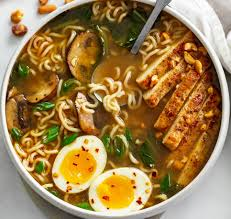

Ramen

Description
This is how I eat my instant ramen.
Ingredients
- One pack of instant ramen (Any flavor)
- One or two eggs
- Water
- Paprika
- Parsley flakes
- Black pepper
- Leftovers (Optional)
Steps
- Boil water in a pot
- Add paprika, parsley flakes, and black pepper
- Add ramen to boiling water
- Then add eggs immediately
- Wait for 1 to 2 mins
- Pour contents into a bowl
- Add seasoning
- Enjoy!